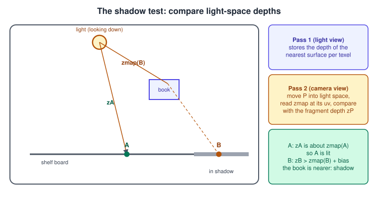
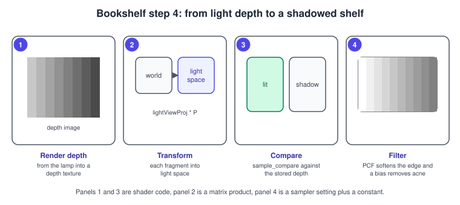
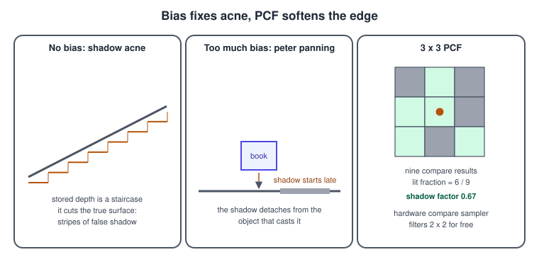
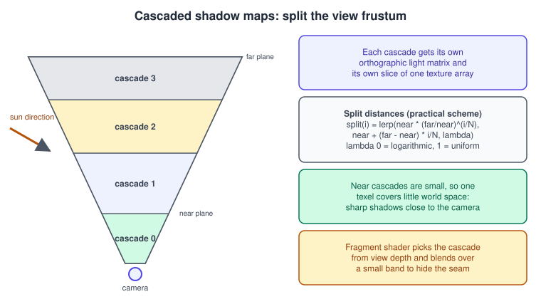

Shadows in Metal
|
This content was generated with the assistance of AI and should be verified against the official documentation before being relied on in production. |
A lit surface does not know whether something stands between it and the lamp. Shadows supply that missing visibility test, and without them objects float: books seem to hover above the shelf and the shelf is not anchored to the wall. Rasterisers have no built-in way to ask "is there anything between this point and the light?", so the most common real-time answer is a shadow map: render the scene once from the light’s point of view, keep only the depth, and then, when shading from the camera, compare each point’s distance to the light with the depth stored for that direction. This page explains the technique, every parameter that makes it look right, the code for a directional lamp, cascades for large scenes, point lights, and the soft-shadow and ambient-occlusion extensions that Metal by Tutorials covers.
The facts were checked in November 2026. The code is Swift 6 and MSL 4.0 (MSL 4.1 belongs to the 27 operating systems and nothing here needs it), written against the 26 SDKs with the Metal 3 encoder as the main path and the Metal 4 differences called out; Metal 4 needs an A14 Bionic or later, an Apple-silicon Mac or Apple Vision Pro. The passes, load actions and store actions used here are explained in Render Passes and Load/Store Actions; the lighting that the shadow factor multiplies is in Lighting Fundamentals and PBR Materials.
This is step 4 of the Metal Bookshelf running example (a multiplatform SwiftUI app hosting an MTKView, Metal 4 with a Metal 3 fallback): the shelf and the books of
bookshelf.glb stand in front of a wall, a desk lamp lights them and the books cast shadows on the boards. The concept page is
Shadows and Global Illumination; the same technique in other libraries is in
Shadow Mapping in OpenGL and three.js Lights and Shadows. Hardware ray-traced shadows, the alternative with no bias and no resolution limit, are in
Ray Tracing.
How a shadow map works

The technique has two passes.
-
Depth pass (from the light). Render the shadow casters with a camera placed at the light, looking along its direction. No colour is written, only depth. The result, the shadow map, stores for every texel the distance to the nearest surface in that direction.
-
Lighting pass (from the camera). For every fragment, transform its world position by the light’s view-projection matrix to get a position in light space. Its x and y select a texel of the shadow map, and its z is the distance to the light. If the stored depth is smaller than the fragment’s depth by more than a small bias, something nearer blocks the light and the fragment is in shadow.

The light’s camera depends on the light type. A directional light (the sun) has parallel rays, so its camera is orthographic: a box that must enclose everything that casts or receives a shadow in view. A spot light uses a perspective camera with the cone’s angle. A point light shines in all directions and needs six views, a cube map. The Bookshelf lamp is treated as a spot light for the base example, but the code below uses a directional light because its maths is the simplest and it generalises to cascades.
The depth texture and the sampler
The shadow map is a depth texture rendered to in one pass and sampled in the next. Its parameters:
| Setting | Choice | Why |
|---|---|---|
Pixel format |
|
Best precision; |
Size |
2048 x 2048 for a room, 4096 for a large view |
Resolution is the sharpness limit: one texel covers the scene extent divided by the size. Memory is size x size x 4 bytes (16 MB at 2048 x 2048, 64 MB at 4096). |
Usage |
|
Written by pass 1, sampled by pass 2. |
Storage mode |
|
Only the GPU touches it. |
Texture type |
|
Matches the sampler in MSL: |
Mipmaps |
None |
Depth comparison on mip levels is meaningless. |
In the shader, a comparison sampler does the depth test in hardware: it reads the stored depth, compares it with the value you give, and returns 1 where the test passes and 0 where it fails. With linear filtering the hardware also compares the four neighbouring texels and interpolates the four results, so even a single sample gives a 2 x 2 percentage-closer filter for free. The sampler can be declared in MSL (no binding needed) or built in Swift:
let sd = MTLSamplerDescriptor()
sd.minFilter = .linear
sd.magFilter = .linear
sd.sAddressMode = .clampToEdge
sd.tAddressMode = .clampToEdge
sd.compareFunction = .less // passes where the fragment is nearer than the stored depth
sd.label = "Shadow comparison sampler"
let shadowSampler = device.makeSamplerState(descriptor: sd)
// encoder.setFragmentSamplerState(shadowSampler, index: 0)Source: Metal: MTLSamplerDescriptor
Complete example: one shadow map for the lamp
Shared types
Add these to ShaderTypes.h of the lighting page (the NS_ENUM macros and simd include are already there).
// Additions to ShaderTypes.h
// BufferIndex gains: BufferIndexShadow = 7, BufferIndexCascades = 8 (6 is BufferIndexJoints on the PBR page)
// TextureIndex gains: TextureIndexShadowMap = 4
typedef struct {
matrix_float4x4 lightViewProjection; // world to light clip space
float depthBias; // subtracted from the fragment depth, in 0..1 depth units
float normalBias; // world-space offset along the normal, scaled by texel size
float texelSize; // 1 / shadow map width, in uv units
} ShadowUniforms;
typedef struct {
matrix_float4x4 viewProjection; // one per cascade
float farDepth; // view-space depth where this cascade ends
} CascadeData;Under Metal 3 these go through setVertexBytes and setFragmentBytes. CascadeData is 80 bytes in Swift, C and MSL (64 for the matrix, 4 for the float, rounded up to the 16-byte alignment of the matrix), so an array of four has a stride of 80, which MemoryLayout<CascadeData>.stride returns.
The light matrix
The orthographic camera of a directional light must enclose the visible scene. The simplest robust method is a bounding sphere: the box is the sphere’s diameter in each direction, so its size does not change as the light turns, which keeps the shadow stable.
import simd
/// Orthographic projection for Metal clip space: x and y in -1...1, z in 0...1, looking down -z.
func orthographic(left: Float, right: Float, bottom: Float, top: Float, near: Float, far: Float) -> simd_float4x4 {
simd_float4x4(columns: (
simd_float4(2 / (right - left), 0, 0, 0),
simd_float4(0, 2 / (top - bottom), 0, 0),
simd_float4(0, 0, -1 / (far - near), 0),
simd_float4(-(right + left) / (right - left), -(top + bottom) / (top - bottom), -near / (far - near), 1)))
}
/// View-projection of a directional light that encloses a sphere around `center`.
/// `direction` is the way the light travels. `casterMargin` extends the volume toward the light
/// so tall objects outside the sphere can still cast into it.
func directionalLightMatrix(direction: simd_float3, center: simd_float3, radius: Float,
casterMargin: Float = 0) -> simd_float4x4 {
let dir = simd_normalize(direction)
let up: simd_float3 = abs(dir.y) > 0.99 ? [0, 0, 1] : [0, 1, 0]
let eye = center - dir * (radius + casterMargin)
let view = lookAt(eye: eye, center: center, up: up) // from the lighting page
let proj = orthographic(left: -radius, right: radius, bottom: -radius, top: radius,
near: 0, far: 2 * radius + casterMargin)
return proj * view
}Source: Metal: MTLRenderCommandEncoder
For the Bookshelf scene the sphere is centred on the shelf with a radius that covers the books (about 1.5 world units). Making it larger than necessary wastes resolution; making it smaller cuts shadows off at the edge of the volume.
The depth-only pipeline and the pass
func makeShadowPipeline(device: MTLDevice, library: MTLLibrary, vertexDescriptor: MTLVertexDescriptor) throws -> MTLRenderPipelineState {
let d = MTLRenderPipelineDescriptor()
d.label = "Shadow depth pipeline"
d.vertexFunction = library.makeFunction(name: "vertex_shadow")
d.fragmentFunction = nil // no fragment function: only depth is written
d.vertexDescriptor = vertexDescriptor
d.depthAttachmentPixelFormat = .depth32Float // colorAttachments[0].pixelFormat stays .invalid
return try device.makeRenderPipelineState(descriptor: d)
}
func encodeShadowPass(encoder: MTLRenderCommandEncoder, pipeline: MTLRenderPipelineState, depthState: MTLDepthStencilState,
uniforms: ShadowUniforms, draw: (MTLRenderCommandEncoder) -> Void) {
var u = uniforms
encoder.label = "Shadow pass"
encoder.setRenderPipelineState(pipeline)
encoder.setDepthStencilState(depthState) // depthCompare .less, depth write enabled
encoder.setCullMode(.back) // thin boards and book pages: keep back-face culling and use a bias
encoder.setDepthBias(0.01, slopeScale: 1.75, clamp: 0.02)
encoder.setDepthClipMode(.clamp) // casters in front of the near plane still write depth
encoder.setVertexBytes(&u, length: MemoryLayout<ShadowUniforms>.stride, index: BufferIndex.shadow.rawValue)
draw(encoder) // shelf and books: set model matrix, vertex buffers, draw
}The pass descriptor, with a clear and a store, is FrameTargets.shadowPass() of Render Passes and Load/Store Actions. A depth-only pipeline with no fragment function is the fastest way to render a shadow map; casters whose silhouette depends on a texture (leaves, fences, cut-out text) need a fragment function that samples
alpha and calls discard_fragment(), which disables the hardware’s early-depth shortcut for those draws.
The shaders
// Shadow.metal
#include <metal_stdlib>
#include "ShaderTypes.h"
using namespace metal;
struct ShadowVertexIn {
float3 position [[attribute(0)]];
};
vertex float4 vertex_shadow(ShadowVertexIn in [[stage_in]],
constant ShadowUniforms &shadow [[buffer(BufferIndexShadow)]],
constant ModelUniforms &model [[buffer(BufferIndexModel)]])
{
return shadow.lightViewProjection * (model.model * float4(in.position, 1.0));
}
/// 3 x 3 PCF. Each sample_compare is already a hardware-filtered 2 x 2 comparison.
/// Returns 1 for fully lit and 0 for fully shadowed.
static float shadowFactor(depth2d<float> shadowMap, constant ShadowUniforms &shadow,
float3 worldPosition, float3 worldNormal, float NdotL)
{
constexpr sampler cmp(coord::normalized, filter::linear, address::clamp_to_edge, compare_func::less);
// Normal-offset bias: move the lookup point off the surface, more at grazing angles.
float3 offsetPosition = worldPosition + worldNormal * shadow.normalBias * (1.0 - NdotL);
float4 lightClip = shadow.lightViewProjection * float4(offsetPosition, 1.0);
float3 ndc = lightClip.xyz / lightClip.w; // orthographic: w is 1
float2 uv = float2(ndc.x * 0.5 + 0.5, 0.5 - ndc.y * 0.5); // texture origin is top left in Metal
float z = ndc.z - shadow.depthBias; // z is already 0...1 in Metal
if (uv.x < 0.0 || uv.x > 1.0 || uv.y < 0.0 || uv.y > 1.0 || z > 1.0) {
return 1.0; // outside the light volume: lit
}
float sum = 0.0;
for (int y = -1; y <= 1; ++y) {
for (int x = -1; x <= 1; ++x) {
float2 o = float2(x, y) * shadow.texelSize;
sum += shadowMap.sample_compare(cmp, uv + o, z);
}
}
return sum / 9.0;
}Three details are specific to Metal. Normalised device coordinates have z in 0 to 1, so the depth needs no remapping (OpenGL needs ndc.z * 0.5 + 0.5). Texture coordinates start at the top left, so v is 0.5 - ndc.y * 0.5
(forgetting this mirrors the shadow vertically, a classic "shadows are upside down" bug). And the offset argument of sample_compare must be a compile-time constant, which is why the loop offsets the coordinate instead of using the offset parameter.
The fragment function of the lighting page multiplies its light contribution by this factor. Only the direct light of the lamp is shadowed; the ambient term is not:
// In fragment_lit / fragment_pbr, extra parameters and use:
// depth2d<float> shadowMap [[texture(TextureIndexShadowMap)]],
// constant ShadowUniforms &shadow [[buffer(BufferIndexShadow)]]
float visibility = shadowFactor(shadowMap, shadow, in.worldPosition, N, NdotL);
color += (albedo * NdotL + material.specularStrength * spec) * radiance * visibility; // lamp onlyThe extra parameters are bound with encoder.setFragmentTexture(shadowMap, index: TextureIndex.shadowMap.rawValue) and setFragmentBytes for ShadowUniforms in the main pass. A shadow map that is correct but invisible is almost always a missing store action
or a missing .shaderRead usage, see the checklist at the end.
Under Metal 4
The shaders do not change. The shadow map’s gpuResourceID goes into the main pass’s MTL4ArgumentTable with setTexture(_:index:), the uniforms live in buffers whose addresses go into the table, the texture and buffers must be in the residency set, and the main pass’s encoder begins with a
barrier(afterQueueStages: .fragment, beforeStages: .fragment) so it does not read the map before the shadow pass finished writing it, as shown on the render-pass page. Pipeline creation goes through MTL4Compiler; see
Hello Triangle with Metal 4 for the surrounding objects.
Bias, acne and peter panning

The depth map has finite resolution and finite precision, so the surface that cast a shadow is also compared with itself. A tilted surface is sampled at texel centres that sit a little above or below the true surface, and half the points fail the test against themselves: stripes of false shadow called shadow acne. The fix is a bias that pushes the comparison toward the light. Too much bias lifts the shadow off its caster (peter panning): the shadow of a book starts a few millimetres from the book. Tune with three tools, in this order:
-
Slope-scaled depth bias in the shadow pass, the
setDepthBias(_:slopeScale:clamp:)call. The first argument is a constant offset, the second grows with the polygon’s slope relative to the light (steep polygons need more), the third caps the total. Start at0.01,1.75,0.02and adjust by looking at a floor lit at a grazing angle. -
Comparison bias in the lighting pass,
depthBiasin the uniforms (0.001 to 0.005 in 0..1 depth units for an orthographic light). -
Normal-offset bias in the lighting pass: shifting the lookup position along the normal by about one texel (
normalBiasis that distance in world units) removes acne with much less peter panning than constant bias, because it works in the right direction at every slope. Its cost is a slightly thinner shadow at contact points.
Front-face culling in the shadow pass (storing the back faces' depth) is another popular trick: the stored depth lies behind the lit surface, so acne cannot happen on faces that face the light. It works for closed, thick meshes and fails for thin ones such as the shelf boards, the book pages and the cover of an open book, which then leak light; the Bookshelf scene keeps back-face culling and relies on bias.
PCF and soft shadows
A hard comparison gives a staircase edge. Percentage-closer filtering (PCF) averages several comparisons around the lookup, so the edge becomes a ramp. The code above takes nine hardware-filtered samples, an effective 4 x 4 footprint; the width of the ramp is the kernel radius times the texel size, a constant-width penumbra. Real penumbrae are wider the farther the shadow is from its caster. Options, in increasing cost:
| Technique | Idea | Notes |
|---|---|---|
Hardware PCF |
One |
Free 2 x 2 filtering; the default for a small kernel. |
Fixed-kernel PCF |
A 3 x 3 or 5 x 5 loop (as above) or a rotated Poisson disc |
Cost grows with the kernel; the disc, rotated per pixel with a noise value, trades banding for noise. |
PCSS |
Search for blockers, estimate the penumbra width from the average blocker distance, then filter with that width |
Contact-hardening shadows; needs a second, non-comparison sample of the map (a regular |
Variance and exponential maps |
Filter stored moments or exponentials of depth, which can be blurred and mipmapped |
Cheap soft shadows, but light bleeding and precision issues. |
Ray-traced shadows |
One shadow ray per pixel toward the light, optionally many for soft shadows |
Exact, no bias, scene-wide; needs acceleration structures, see the ray-tracing page. |
Cascaded shadow maps
A single map for a large view is a bad trade: the resolution is spread evenly over the scene while the eye notices detail near the camera. Cascaded shadow maps (CSM) split the camera’s view frustum into several depth ranges, give each its own tight orthographic light camera and shadow map, and pick the map by the fragment’s distance.

The pieces:
-
Splits. The practical split scheme mixes a logarithmic distribution (equal ratio between planes, which matches how perspective projection stretches distant detail) with a uniform one, controlled by a blend factor. Four cascades and a blend of 0.6 to 0.9 suit most outdoor scenes; a room-sized scene such as the Bookshelf needs one or two.
-
Fit. For each slice, find the eight corners of its sub-frustum in world space, take their bounding sphere, and build the light camera from it. Spheres, unlike boxes fitted to the corners, keep the same size when the camera turns, which avoids shimmering.
-
Texel snapping. Round the light-space centre to whole texels so the shadow does not crawl as the camera moves.
-
Storage. One
.type2DArraydepth texture with one slice per cascade; each cascade is its own pass withdepthAttachment.sliceset (simple), or one pass overrenderTargetArrayLengthlayers with the vertex function writing[[render_target_array_index]](fewer passes, more vertex work). -
Selection. The fragment function compares its view-space depth with each cascade’s far depth. Blending over a small band at the border hides the seam between maps of different resolution.
struct Cascade {
var viewProjection: simd_float4x4
var farDepth: Float
}
/// Split distances: lambda 0 is logarithmic, 1 is uniform.
func cascadeSplits(near: Float, far: Float, count: Int, lambda: Float) -> [Float] {
(1...count).map { i in
let p = Float(i) / Float(count)
let logarithmic = near * pow(far / near, p)
let uniform = near + (far - near) * p
return logarithmic + (uniform - logarithmic) * lambda
}
}
func makeCascades(cameraView: simd_float4x4, fovY: Float, aspect: Float, near: Float, far: Float,
lightDirection: simd_float3, count: Int, lambda: Float, mapSize: Int, casterMargin: Float) -> [Cascade] {
let splits = cascadeSplits(near: near, far: far, count: count, lambda: lambda)
let invView = cameraView.inverse
let dir = simd_normalize(lightDirection)
let up: simd_float3 = abs(dir.y) > 0.99 ? [0, 0, 1] : [0, 1, 0]
var result: [Cascade] = []
var sliceNear = near
for sliceFar in splits {
// Eight corners of this slice, in view space, then world space.
var corners: [simd_float3] = []
for d in [sliceNear, sliceFar] {
let h = tan(fovY * 0.5) * d, w = h * aspect
for (sx, sy) in [(-1, -1), (1, -1), (-1, 1), (1, 1)] as [(Float, Float)] {
let world = invView * simd_float4(sx * w, sy * h, -d, 1)
corners.append(simd_float3(world.x, world.y, world.z))
}
}
let centre = corners.reduce(simd_float3(repeating: 0), +) / Float(corners.count)
var radius = corners.map { simd_length($0 - centre) }.max() ?? 1
radius = (radius * 16).rounded(.up) / 16 // stable size: quantise the radius
// Light camera around the sphere, then snap the centre to whole texels.
let texel = 2 * radius / Float(mapSize)
let lightView = lookAt(eye: centre - dir * (radius + casterMargin), center: centre, up: up)
var c = lightView * simd_float4(centre, 1)
c.x = (c.x / texel).rounded(.down) * texel
c.y = (c.y / texel).rounded(.down) * texel
let proj = orthographic(left: c.x - radius, right: c.x + radius, bottom: c.y - radius, top: c.y + radius,
near: 0, far: 2 * radius + casterMargin)
result.append(Cascade(viewProjection: proj * lightView, farDepth: sliceFar))
sliceNear = sliceFar
}
return result
}
// Per frame: write [CascadeData] into a buffer, then render each cascade into its slice.
// for (i, cascade) in cascades.enumerated() {
// let pass = MTLRenderPassDescriptor()
// pass.depthAttachment.texture = shadowArray // .type2DArray, arrayLength == cascades.count
// pass.depthAttachment.slice = i
// pass.depthAttachment.loadAction = .clear
// pass.depthAttachment.storeAction = .store
// ... encodeShadowPass with ShadowUniforms(lightViewProjection: cascade.viewProjection, ...)
// }The lighting pass selects a cascade and samples the array texture with the slice as an extra argument:
// In the fragment function (viewDepth is clip.w passed down from the vertex function):
// depth2d_array<float> shadowArray [[texture(TextureIndexShadowMap)]],
// constant CascadeData *cascades [[buffer(BufferIndexCascades)]]
static float cascadeShadow(depth2d_array<float> shadowArray, constant CascadeData *cascades, uint cascadeCount,
float3 worldPosition, float viewDepth, float depthBias)
{
constexpr sampler cmp(coord::normalized, filter::linear, address::clamp_to_edge, compare_func::less);
uint slice = cascadeCount - 1;
for (uint i = 0; i < cascadeCount; ++i) {
if (viewDepth < cascades[i].farDepth) { slice = i; break; }
}
float4 lightClip = cascades[slice].viewProjection * float4(worldPosition, 1.0);
float3 ndc = lightClip.xyz / lightClip.w;
float2 uv = float2(ndc.x * 0.5 + 0.5, 0.5 - ndc.y * 0.5);
if (uv.x < 0.0 || uv.x > 1.0 || uv.y < 0.0 || uv.y > 1.0) { return 1.0; }
return shadowArray.sample_compare(cmp, uv, slice, ndc.z - depthBias);
}The bias of a cascade must scale with its size: a far cascade covers more world space per texel, so a constant depth bias that is right for cascade 0 is wrong for cascade 3, and in practice you store a bias per cascade (or derive it from the cascade’s depth range). The PCF loop of the single-map version works unchanged per cascade by adding the slice argument.
Point lights and spot lights
A spot light needs one perspective shadow map with the cone angle as the field of view; the shader divides by lightClip.w as the code above already does. A point light needs a cube shadow map:
-
a
.typeCubedepth texture, rendered in six passes, one per face (depthAttachment.slice0 to 5 selects the face), each with a 90 degree perspective camera; -
in the shader a
depthcube<float>sampled with the direction from the light to the fragment; the compare value is the fragment’s depth in the cube face’s projection, derived from the largest component of that direction; -
six passes per light make several shadowed point lights expensive; most renderers shadow only the one or two most important and use cheaper tricks (baked occlusion, contact shadows) for the rest.
Ambient occlusion and soft shadows from the sky
A shadow map handles light from one direction. The soft darkening in corners and under shelves that comes from ambient light being blocked is ambient occlusion (AO), which Metal by Tutorials covers next to shadows. The options mirror the shadow ones:
-
Baked AO in a texture (the
occlusionchannel of the PBR materials page), computed offline: free at runtime and exact for static geometry, wrong for moving objects. -
Screen-space AO (SSAO). After the main pass, for each pixel take a handful of random points in a hemisphere around the normal, project them to the screen and test them against the depth buffer; the fraction that lies behind surfaces is the occlusion. The result is noisy, so it is blurred with an edge-aware filter and multiplied into the ambient term. It needs the depth and the normals stored, which is why deferred renderers get it cheaply; see Deferred and Tile Shading.
-
Ray-traced AO. A few short rays per pixel with the intersection API; no screen-space artefacts, needs hardware ray tracing (A17 Pro, M3 or later for the hardware path), see the ray-tracing page.
SSAO is a post-process pass: it reads textures written by earlier passes and writes one, so its load and store actions follow the same rules as any other pass, and it can be implemented with a fragment function or as a compute kernel (Compute Kernels, Image Processing and MPS).
Common mistakes
| Symptom | Likely cause |
|---|---|
No shadows at all |
The shadow pass stores with |
Shadows mirrored vertically |
v coordinate not flipped ( |
Shadow is offset or too small |
Light matrix computed from different model matrices in the two passes, or the light volume does not enclose the casters |
Stripes on lit surfaces |
Acne: raise slope-scaled bias or normal offset |
Shadows detached from objects |
Peter panning: bias too large, or front-face culling on thin geometry |
Light leaks under thin walls |
Same causes; also a shadow map too coarse for thin geometry |
Flickering shadow edges when the camera moves |
Cascade size changes with the view, or no texel snapping |
Shadow edges wobble in time |
Light volume re-fitted every frame to a changing bounding box; use a sphere |
Different results on Mac and iPhone |
Precision or compare-function difference hidden by a lucky bias; test both and validate with Metal API validation on |
Performance notes
-
The shadow pass is vertex-bound: no fragment work, but all shadow-casting geometry is drawn again. Cull casters against the light volume on the CPU, or with a GPU-driven pass (see GPU-Driven Rendering with Indirect Command Buffers).
-
Update static shadow maps once and reuse them; re-render only when a caster or the light moves. Update far cascades less often than near ones.
-
Choose the smallest texture that looks right.
.depth16Unormhalves memory and bandwidth for small scenes; a 4096 x 4096 depth32 map is 64 MB and a full read per sample pass. -
The comparison read of a private depth texture is fast; 9 samples per pixel is the practical ceiling for PCF on mobile GPUs, 4 to 5 are common. Prefer a good bias and a poisson disc to a very large kernel.
-
On Apple GPUs the shadow pass is a separate render pass with its own tile loop; store the depth only once and sample it in the lighting pass. Never
.loadit back.
What changed since the older guides
| Older guide | Today |
|---|---|
Metal by Tutorials, 4th edition (Metal 3, Xcode 15), chapters 13 and 28 on shadows, soft shadows and ambient occlusion; a new |
The techniques are unchanged. The 26 OSes add the Metal 4 argument tables, residency sets and explicit barriers between passes; ray-traced shadows through |
Metal Programming Guide (Metal 2, Swift 4, Xcode 9): |
|
Guides written before Apple silicon: Mac GPUs as discrete devices with managed memory |
Apple silicon shares memory between CPU and GPU; managed storage is deprecated in the 27 operating systems, so a shadow map is |
References
-
MTLRenderPipelineDescriptor: https://developer.apple.com/documentation/metal/mtlrenderpipelinedescriptor
-
MTLRenderCommandEncoder, setDepthBias: https://developer.apple.com/documentation/metal/mtlrendercommandencoder
-
MTLSamplerDescriptor: https://developer.apple.com/documentation/metal/mtlsamplerdescriptor
-
MTLRenderPassAttachmentDescriptor, slice: https://developer.apple.com/documentation/metal/mtlrenderpassattachmentdescriptor/slice
-
Metal Shading Language Specification: https://developer.apple.com/metal/Metal-Shading-Language-Specification.pdf
-
Understanding the Metal 4 core API: https://developer.apple.com/documentation/metal/understanding-the-metal-4-core-api
-
Metal sample code library: https://developer.apple.com/metal/sample-code/
-
Metal by Tutorials (Kodeco): https://www.kodeco.com/books/metal-by-tutorials
-
Metal Programming Guide (InformIT): https://www.informit.com/store/metal-programming-guide-tutorial-and-reference-via-9780134668949